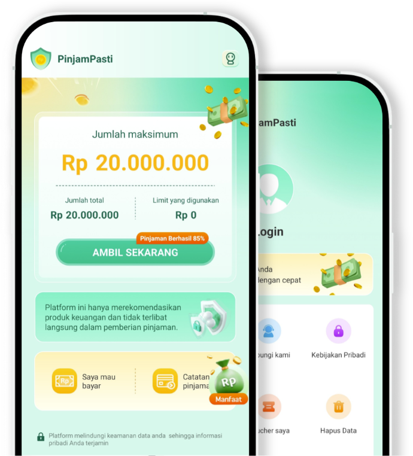

Pinjaman Cepat dan Terpercaya untuk Masa Depan Anda
Dapatkan pinjaman dengan proses mudah, bunga kompetitif, dan persetujuan dalam 24 jam. Wujudkan impian Anda bersama PinjamPasti.

Layanan Unggulan Kami
Pinjaman Pribadi
Solusi finansial untuk kebutuhan personal Anda dengan proses yang mudah dan cepat.
Pinjaman Bisnis
Kembangkan usaha Anda dengan dukungan modal yang fleksibel dan bunga kompetitif.
Persetujuan Cepat
Dapatkan persetujuan dalam waktu 24 jam dengan teknologi AI terdepan.
Mengapa Memilih PinjamPasti?
Teknologi Canggih
Platform berbasis AI untuk analisis risiko yang akurat dan proses yang efisien.
Keamanan Terjamin
Sistem keamanan berlapis dengan enkripsi tingkat bank untuk melindungi data Anda.
Layanan 24/7
Tim customer service yang siap membantu Anda kapan saja, di mana saja.
Testimoni Pelanggan
"Proses pinjaman sangat mudah dan cepat. Dalam 24 jam dana sudah cair ke rekening saya."
Sari Indah
Entrepreneur"Bunga yang kompetitif dan pelayanan yang sangat profesional. Terima kasih PinjamPasti!"
Budi Santoso
Business Owner"Platform yang user-friendly dan customer service yang responsif. Sangat direkomendasikan."